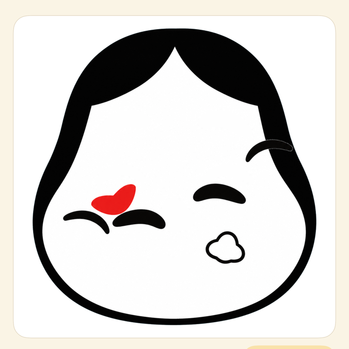

見えないまま おいて、
みんなで わらおう。
お正月の遊び「福笑い」です。まっ白な板に、目・鼻・口・まゆを指で置きます。顔のりんかくも、置いた物も、おく人には見えません。ぜんぶ置いたら「じゃーん！」。年末年始に家族が集まったとき、スマホ1台を回して遊べます。
広告なし・アプリの中の課金なしの買い切りです。値段は App Store に出ているものをご覧ください。iOS 26 以上の iPhone で使えます。

「もっと みぎ！」「じゃーん！」あそびかた
見えないまま 置く
目・鼻・口・まゆを、ひとつずつ指で置きます。指を離したところに置かれますが、顔のりんかくも置いた物も画面に出ません。
みんなは 声で教える
「目かくしで おく」を選ぶと、顔と置いた物が画面に出ます。おく人が目をつぶって、みんなが「もっと右！」「下、下！」と教えてあげます。
ぜんぶ置いたら「じゃーん！」
どんな顔になったかを、みんなで見ます。お手本にどれくらい似ているかの点も出ます。
家族で遊ぶための工夫
顔は4つ
おかめ・ひょっとこ・ひつじ・ねこ。小さい子も分かる、やさしい顔です。次の人は、ちがう顔でも遊べます。
何人でも 順番に
「つぎの人が やる」で、つづけて遊べます。おわると、みんなの顔が並び、「いちばん そっくり」と「いちばん へんてこ」が決まります。
できた顔は 写真に残せる
1まいずつでも、まとめてでも、写真に保存できます。
おりたたみの iPhone なら
iPhone Duo をひらいてノートパソコンのように置くと、置いている顔が外がわの画面に自動でうつり、むかいの人が見ながら教えられます（外がわに出すしくみがカメラ用なので、そのあいだだけカメラを使います）。
よくある質問
お金はかかりますか？
アプリを買うときの代金だけです。広告も、アプリの中の課金もありません。
ログインや会員登録は必要ですか？
必要ありません。開いて「はじめる」を押せば遊べます。
1人でも遊べますか？
遊べます。置いた物が見えないまま置いて、最後にできた顔を見ます。
できた顔はどこに保存されますか？
iPhone の中だけです。開発者のサーバーには送りません。写真に保存するのは、あなたが「保存」を押したときだけです。
カメラを使いますか？
iPhone Duo をひらいて遊んでいるあいだだけ使います。外がわの画面に表示するためのしくみがカメラ用のものだからで、映像を見たり、保存したり、送ったりはしません。遊んでいる画面の「やめる」で止められます。ふつうの iPhone では使いません。
どの機種で使えますか？
iPhone 専用のアプリです。iOS 26 以上が必要です。
お問い合わせ
不具合やご意見は、ryo.tsuzukihashi@tsuzukit.com までメールでお送りください。件名に「ふくわらい」と入れていただけると助かります。
Place it blind,
then laugh together.
Fukuwarai is a traditional Japanese New Year game. Place the eyes, nose, mouth and eyebrows on a blank board with your finger. The player can't see the face outline or where the pieces land. When all the pieces are placed, the face is revealed. Pass one iPhone around the family. The app is in Japanese.
No ads and no in-app purchases. See the App Store for the price. Requires an iPhone with iOS 26 or later.
How to play
Place the pieces without seeing them
Touch the board and lift your finger to place each piece. Neither the face outline nor the placed pieces are shown on the screen.
Everyone calls out directions
Choose the blindfold style to show the face and the pieces on the screen. The player closes their eyes and the others call out "More to the right!" "Lower!"
Reveal the face
See the face you made, with a score for how close it is to the original. You can save it to Photos.
FAQ
Does it cost anything?
Only the price of the app. No ads and no in-app purchases.
Do I need an account?
No. Open it and tap Start.
Where are the faces stored?
Only on your iPhone. Nothing is sent to the developer. Faces are added to Photos only when you tap Save.
Does it use the camera?
Only on iPhone Duo, while you play with it open, to show the face on the outer display. The system API for the outer display requires a running camera session. The video is never shown, saved, or sent. Regular iPhones never use the camera.
Contact
Email ryo.tsuzukihashi@tsuzukit.com with "Fukuwarai" in the subject.